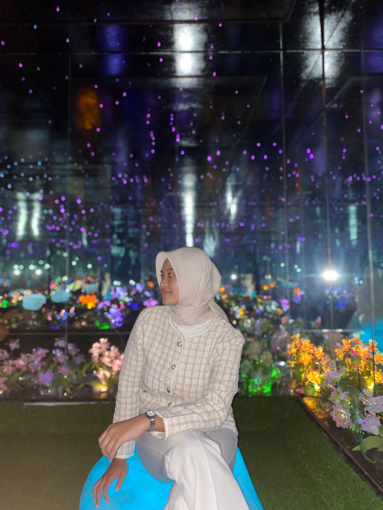
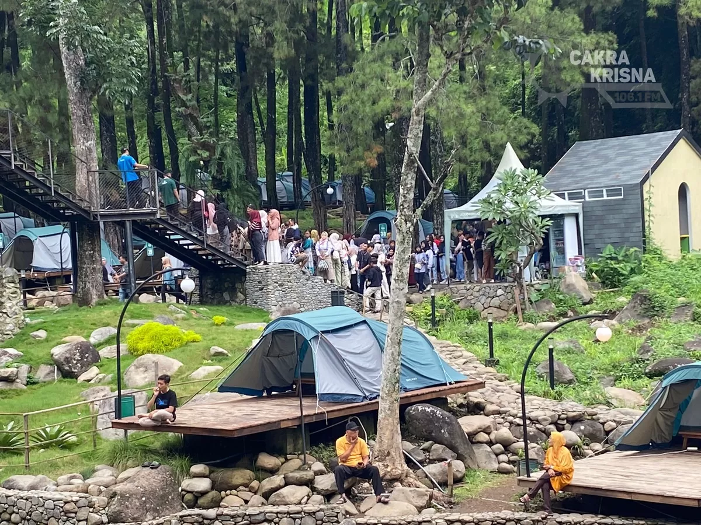
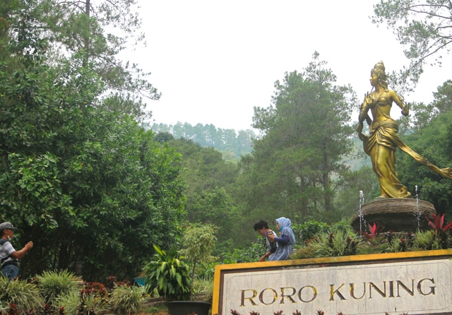
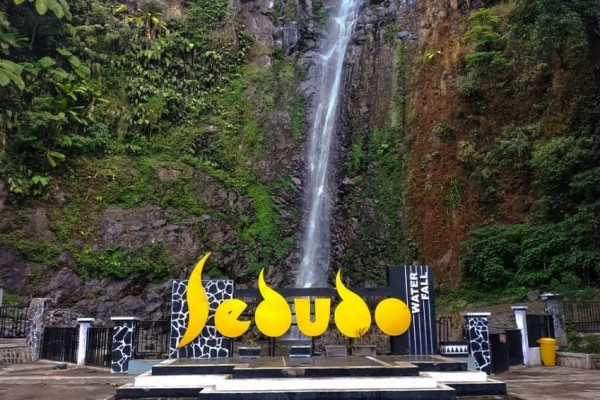
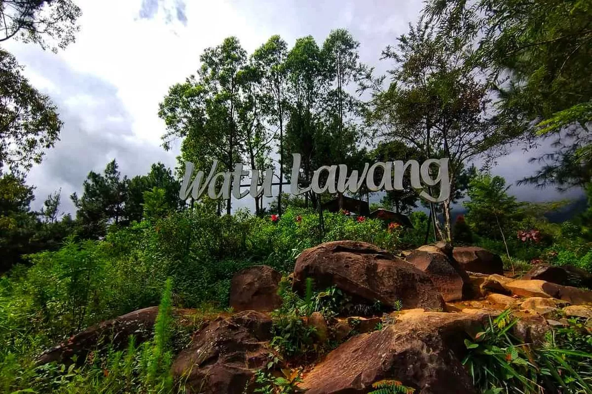

Information Systems student | Nganjuk Local Explorer | Travel Storyteller & Enthusiast
"Halo! Saya Anggi Mahardika Dwi Utami. Melalui ruang web ini, saya ingin mengajak siapa saja untuk melihat dan mengenal lebih dekat keindahan alam serta pesona tersembunyi yang ada di Nganjuk. Dari sejuknya air terjun hingga eloknya perbukitan, setiap sudut daerah kita selalu menyimpan cerita yang hangat dan layak untuk dibanggakan."

Tempat wisata modern di kawasan pegunungan Sawahan yang menawarkan pengalaman berkemah mewah (glamping) dengan udara sejuk khas pegunungan.

Destinasi wisata alam di Desa Bajulan yang dikelilingi hutan pinus asri, lengkap dengan aliran air terjun bertingkat dan area rekreasi yang ramah keluarga.

Destinasi wisata legendaris di Kecamatan Sawahan dengan tinggi sekitar 105 meter, terkenal dengan panorama pegunungan yang sejuk serta tradisi ritual siraman setiap bulan Sura.

Kawasan perbukitan tinggi di lereng Gunung Wilis yang menyuguhkan pemandangan alam spektakuler, formasi batuan unik, serta spot favorit untuk menikmati matahari terbit.